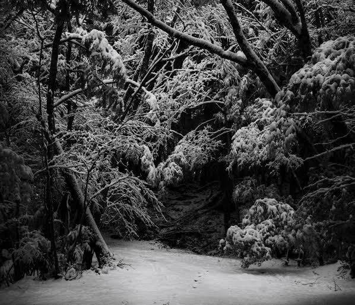

Un archivo de consulta para entender cómo funciona esta rama introspectiva del metal extremo, desde sus raíces escandinavas de los años 90 hasta el sonido melódico actual liderado por Blade and Bath, Decalius y Sukkubys.

A diferencia del Black Metal tradicional centrado en lo oculto o antirreligioso, el DSBM lleva la distorsión hacia la introspección, la nostalgia y el aislamiento.
Musicalmente sustituye la agresión constante por progresiones menores hipnóticas, arpegios limpios con mucha reverberación y voces rasgadas que expresan vulnerabilidad.
Surgen los riffs repetitivos, tiempos lentos y voces agonizantes que sentaron las bases fuera del black metal veloz.
Proyectos solistas grabados en cinta o estudios caseros con estética lo-fi y muros de sonido densos.
Se incorporan estructuras de post-punk, rock depresivo, bajos protagonistas y melodías urbanas.
Cruce directo con grunge, shoegaze y slowcore; guitarras limpias cristalinas que atrajeron a una nueva generación de oyentes.
Estos tres proyectos definen el sonido actual del género. Selecciona cada ficha para revisar su identidad gráfica, integrantes, firma de guitarra y álbumes esenciales.
| PROYECTO | PAÍS / FORMATO | FIRMA DE GUITARRA | ESTILO VOCAL | DISCO CLAVE |
|---|---|---|---|---|
| Blade and Bath | Ucrania (Solista) | Arpegios + trémolo atmosférico | Shriek agudo con eco largo | Euphoria of Self-Destruction |
| Decalius | Brasil (Solista) | Acordes grunge + solos tristes | Cruda, directa al frente | Dehumanizing Loneliness |
| Sukkubys | Escena Underground | Capas difusas y acordes lentos | Lamentos sumergidos en reverb | Eternal Solitude |
Detalles poco conocidos sobre la grabación, los nombres, la psicología y la historia detrás de estas bandas.
Investigaciones en psicología musical (como los estudios de la Universidad de Queensland) confirman que escuchar música extrema y melancólica no aumenta la tristeza, sino que ayuda a procesar emociones complejas y produce calma.
A diferencia de los puristas del Black Metal que solo escuchan metal extremo, el creador de Decalius ha citado abiertamente el grunge de los 90 y el rock alternativo como pilares de sus progresiones de acordes y solos.
Proyectos como Xasthur, Blade and Bath o Decalius son estudios de una sola persona. Muchos jamás han dado un concierto porque sus canciones están diseñadas para escucharse en soledad con auriculares.
Bandas como Thy Light (Brasil) y Nocturnal Depression (Francia) incorporan piezas de piano minimalista y violonchelo en medio de guitarras distorsionadas, inspiradas en compositores románticos como Chopin.
Aunque el género nació en Escandinavia, hoy sus escenas más activas están en Latinoamérica (Brasil, México, Chile), Europa del Este (Ucrania, Rusia) y Georgia (Psychonaut 4).
En los inicios del género, varios músicos evitaban amplificadores caros de tubos y grababan directamente con pedales de distorsión conectados a grabadoras de cassette para lograr un tono frío y cortante.
El DSBM moderno dejó atrás los logos ilegibles tipo "ramas de árbol" del Death Metal para adoptar caligrafía gótica clásica, tipografía serif espaciada y fotografía analógica en blanco y negro.
Estilo Sukkubys / Clásico europeo.
Estilo Decalius / Post-DSBM.
Estética poética y minimalista.
Grabaciones caseras lo-fi.
Se mantiene afinación estándar (E Standard) o Drop D para conservar la claridad en las cuerdas agudas. La canción suele alternar arpegios limpios con mucha reverberación y muros de distorsión aguda.
Se prioriza la carga emocional sobre la perfección técnica. Predominan los gritos agudos rasgados (false cord / fry) y pasajes susurrados mezclados con eco profundo.
La batería evita el virtuosismo. Usa patrones constantes de platillos abiertos (Ride o Crash) y bombos lentos para no romper el estado hipnótico de las guitarras.
La grabación casera (bedroom recording) es parte esencial de su identidad: conserva el aire de la habitación y una calidez analógica que conecta directo con el oyente.
Tres etapas recomendadas para alguien que nunca ha escuchado el género.
Melodías claras de guitarra y estructuras cercanas al rock alternativo.
Mezcla de post-punk, dinámicas intensas y melancolía nocturna.
Temas largos, producción cruda y muros de sonido ambientales.